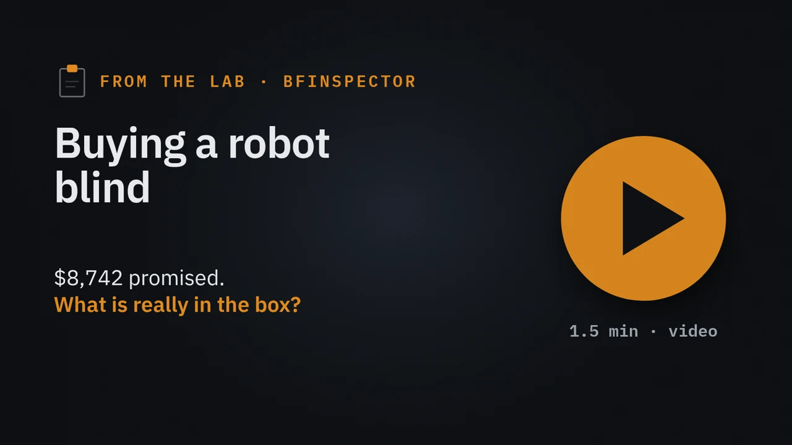
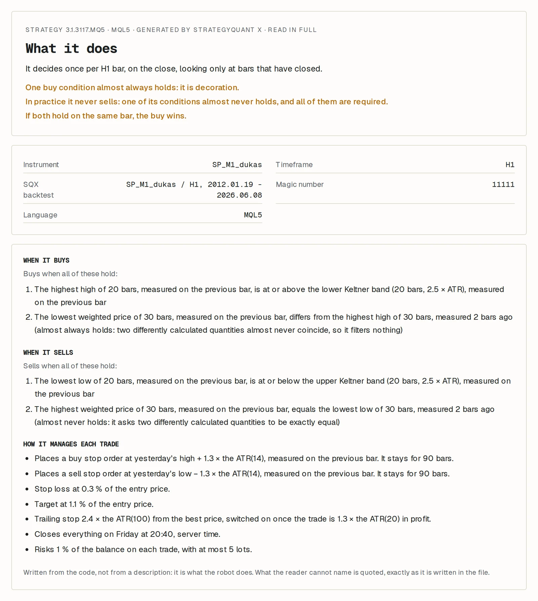
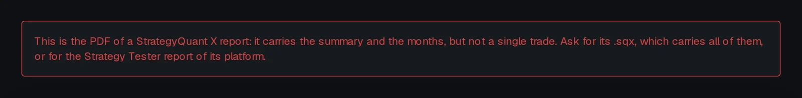
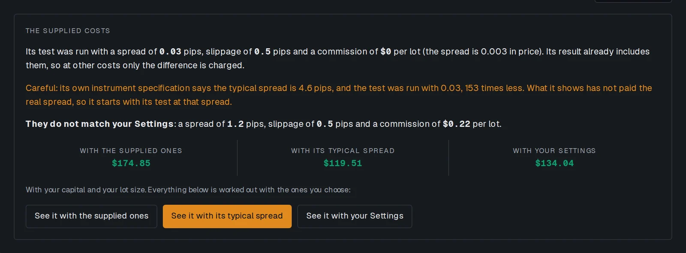
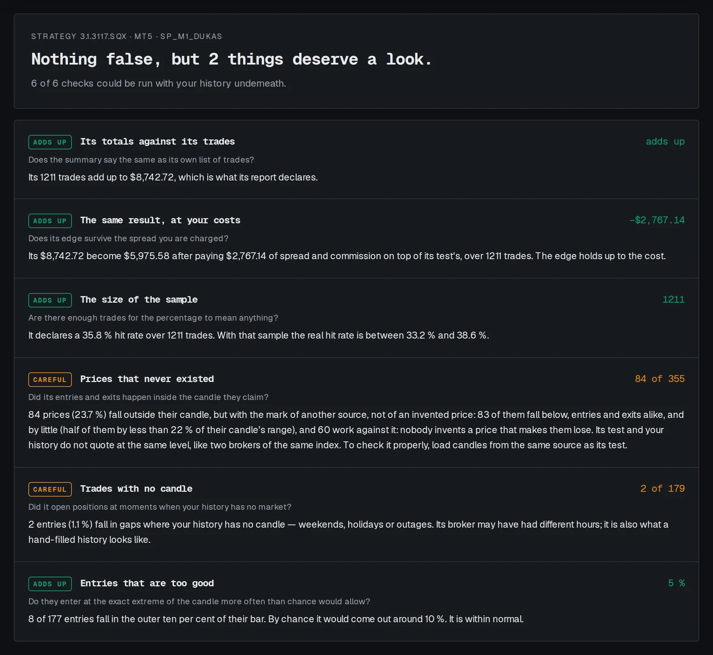
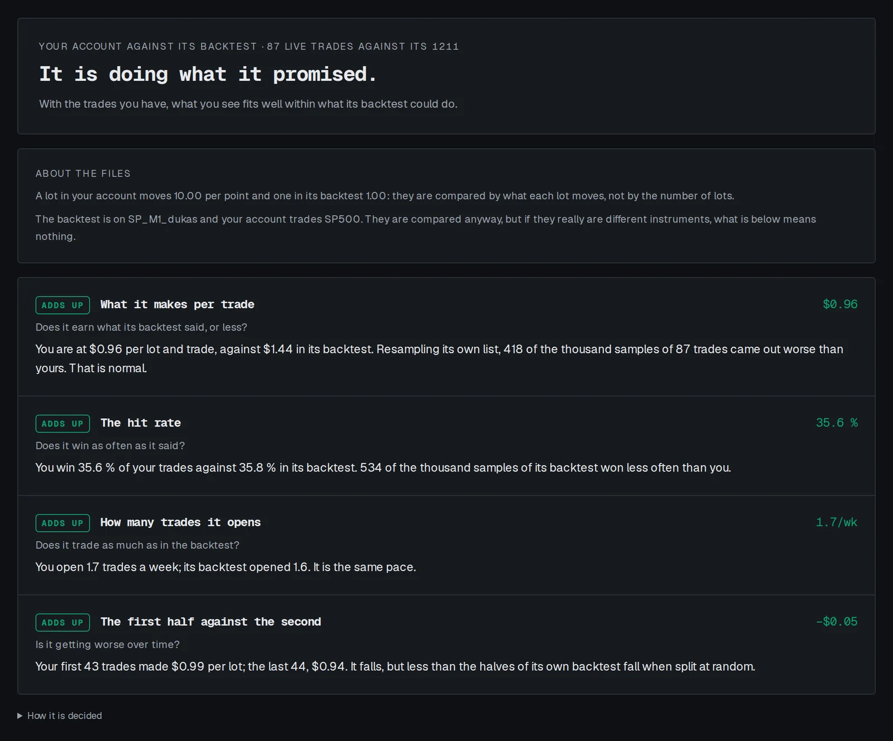

La caja
Quien vende te manda tres ficheros: el robot (un .mq5 para MetaTrader 5), un PDF con su backtest y un .sqx, el proyecto de StrategyQuant X del que salió. El PDF pinta bien: 8.742 $ de beneficio en 1.211 operaciones en el S&P 500, de 2012 a 2026, un factor de beneficio de 1,24 (gana 1,24 $ por cada dólar que pierde) y una caída máxima del 10,7 %.
Abrimos la caja con BFInspector, la herramienta gratuita que regalamos, como lo haría quien compra. Es un robot de StrategyQuant X de verdad, no uno hecho para la ocasión. Esto es lo que salió.
Lo que hace de verdad
BFInspector lee el código sin ejecutarlo y escribe, con palabras, cuándo compra, cuándo vende y cuánto arriesga.
- Sólo compra. Su regla de venta pide que dos precios calculados de forma distinta sean exactamente iguales. Eso no pasa casi nunca. Las 1.211 operaciones de su propio informe son compras.
- Una de sus dos condiciones de compra es de adorno. Se cumple casi siempre, así que no filtra nada.
- Lo que trabaja: una orden de compra por encima del máximo de ayer, un stop al 0,3 % del precio, un objetivo al 1,1 %, un stop dinámico y cerrarlo todo el viernes por la tarde. Arriesga el 1 % del saldo en cada operación.
- No lleva ninguna de las siete trampas conocidas (doblar tras perder, operar sin stop, mirar el futuro, candados de cuenta…).

Nada de esto está en el PDF. Quien sólo leyera el PDF no sabría que compra un robot que no vende nunca.
El PDF no trae operaciones
El PDF es un resumen: totales, una tabla por meses, gráficos. Ni una operación. Un resumen no se puede comprobar contra nada. BFInspector lo dice y te pide el .sqx, que las lleva todas.

¿Le cuadran las cuentas? Sí
Con el .sqx, sus 1.211 operaciones suman exactamente los 8.742,72 $ que declara su informe. Nadie retocó el resumen. Es lo primero que falla en un informe tramposo, y éste es honrado.
La horquilla que no pagó
Aquí está la trampa. El .sqx también dice cuánto costaba operar en la prueba: un diferencial de 0,03 pips. Su propia ficha del instrumento, dentro del mismo fichero, dice que el S&P 500 cuesta normalmente 4,6 pips. La prueba pagó una horquilla 153 veces más fina que la de verdad.
BFInspector repite las mismas 1.211 operaciones con el diferencial que su propia ficha llama típico. Los 8.742 $ se quedan en 5.976 $: casi un tercio del beneficio no iba a llegar nunca a la cuenta de nadie. Sigue ganando, pero no es el robot del PDF.

Las velas de tu bróker no son las suyas (y eso no es fraude)
Una buena comprobación es poner sus operaciones encima de tu propio histórico: una operación a un precio que el mercado no tocó es inventada. Usamos dos años de S&P 500 de un bróker corriente. 84 de 355 precios caían fuera de su vela.
Parece una condena, y no lo es. 83 de los 84 caían por debajo de la vela, entradas y salidas por igual, y por poco. Su prueba usó otra fuente de datos, que cotiza el mismo índice unos puntos más abajo, y de noche las dos pueden separarse bastante. Un precio inventado se sale hacia el lado que le conviene al vendedor; 60 de éstos perjudican al vendedor. Nadie se inventa un precio que le hace perder.
La primera vez que lo pasamos, BFInspector lo llamó fraude. La versión 2.5.0 reconoce la huella de otra fuente, avisa en vez de acusar y te pide velas de la misma fuente que la prueba.

Con los precios del bróker
Así que hicimos lo que pide esa comprobación, pero al revés: pasar el robot por los precios del bróker. El último año de su backtest, de junio de 2025 a junio de 2026, en el Probador de MetaTrader 5 de ese bróker: 87 operaciones. Los mismos meses, otros precios. Contra su backtest opera al mismo ritmo (1,7 operaciones por semana contra 1,6), acierta lo mismo (35,6 % contra 35,8 %) y gana algo menos por operación (0,96 $ por lote contra 1,44 $), de sobra dentro de lo que su propia historia da de sí: 418 de mil muestras al azar de su backtest lo hicieron peor. Con los precios del bróker sigue siendo el mismo robot.

¿Y después de su backtest?
Ésa es la única pregunta que ninguna caja contesta. Del 9 de junio al 16 de octubre de 2026, meses que su backtest no vio, el mismo Probador le dio 26 operaciones. Acertó el 31 %, y perdió dinero: 0,78 $ por cada dólar perdido, contra los 1,24 $ que prometía.
Veintiséis operaciones son muy pocas para distinguir una mala racha de un robot roto. BFQuarantine, nuestro programa para vigilar un robot después de comprarlo, dice justo eso: pierde dinero, pero aún no claramente peor de lo prometido. Cómo decide cuándo hay que apagar un robot es otra nota.
Lo que nos dijo la caja
- Qué hace: un robot que sólo compra el S&P 500, con una condición que no hace nada.
- Si el informe es honrado: sí, sus totales cuadran con sus operaciones, y con los precios del bróker se porta igual.
- Cuánto vale para ti: casi un tercio menos de lo que dice, porque su prueba nunca pagó una horquilla de verdad.
Nada de esto nos dijo si ganaría dinero después de su backtest. Sus primeros meses dicen que de momento no, y todavía son pocos para estar seguros. Para eso está la cuarentena. Pero nadie paga un coche sin levantar el capó, y esto ha costado cinco minutos.
BFInspector es gratis, para Linux (Windows y macOS, próximamente), y nada sale de tu ordenador.
De dónde salen los números
De BFInspector 2.5.0, con los ficheros que recibiría quien compra: el .mq5 del robot, su PDF de StrategyQuant X y su .sqx, una estrategia para el S&P 500 en velas de una hora probada de enero de 2012 a junio de 2026. Las velas de debajo son dos años de S&P 500 del MetaTrader 5 de un bróker corriente. Las dos pasadas por el Probador de ese bróker, la del último año de su backtest y la de los meses de después, son nuestras, de octubre de 2026. Las capturas son de esa misma inspección.